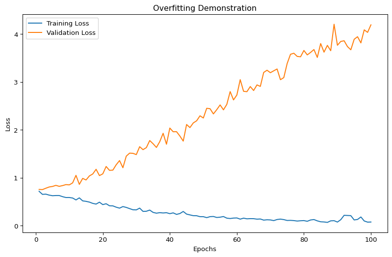

17Hyper-Parameter Optimization (HPO) in Machine Learning
Author
Data Science Research Team
Published
March 27, 2025
17.1 Introduction
17.1.1 What is Hyper-Parameter Optimization?
Hyper-Parameter Optimization (HPO) is a critical process in machine learning that involves finding the most effective configuration of model hyperparameters to maximize performance. Unlike standard model parameters that are learned during training, hyperparameters are set before the learning process begins and significantly impact model performance.
17.1.2 Why is HPO Important in Machine Learning?
Hyperparameter optimization is crucial because: - The right hyperparameters can dramatically improve model accuracy - Poorly chosen hyperparameters can lead to underfitting or overfitting - Manual tuning becomes impractical for complex models with many hyperparameters
17.1.3 Analogy: Baking a Cake - Ingredients vs. Oven Settings
Think of hyperparameters like oven settings when baking a cake: - Model Parameters = Cake Ingredients (learned during mixing) - Hyperparameters = Oven Temperature and Baking Time (set before baking) - Just as precise oven settings can make or break a cake, hyperparameters can make or break a machine learning model
17.2 Understanding Hyper-Parameters
17.2.1 Types of Hyper-Parameters in Neural Networks
Common hyperparameters include: - Learning Rate: Controls the step size during optimization. - Batch Size: Determines the number of samples per training batch. - Dropout Rate: Fraction of neurons dropped during training to prevent overfitting. - Regularization Strength: Penalizes large weights to improve generalization. - Momentum: Accelerates gradient descent by considering past gradients. - Network Architecture Parameters: Includes the number of layers, units per layer, and activation functions.
C:\Users\roess\Documents\repos\Notes\myvenv312\Lib\site-packages\keras\src\layers\core\dense.py:87: UserWarning:
Do not pass an `input_shape`/`input_dim` argument to a layer. When using Sequential models, prefer using an `Input(shape)` object as the first layer in the model instead.
17.2.2 Role of Hyper-Parameters in Model Performance
Hyperparameters play a critical role in determining the behavior and effectiveness of machine learning models. They influence several key aspects, including: - Model Complexity: Hyperparameters such as the number of layers in a neural network or the depth of a decision tree directly affect how complex the model can be. - Training Dynamics: Parameters like the learning rate or batch size control how the model learns during training, impacting convergence speed and stability. - Regularization: Techniques like dropout rates or L2 regularization coefficients help prevent overfitting by constraining the model’s capacity. - Generalization Capabilities: Proper tuning of hyperparameters ensures the model performs well on unseen data, balancing underfitting and overfitting.
17.2.3 Why Hyper-Parameters Cannot Be Learned Like Normal Parameters
Unlike model parameters (e.g., weights in a neural network), hyperparameters cannot be optimized directly during training due to several reasons: - No Direct Gradient Computation: Hyperparameters are not part of the model’s computational graph, so their impact on the loss function cannot be differentiated to compute gradients. - Discrete or Categorical Nature: Many hyperparameters, such as the number of layers or choice of activation functions, are not continuous, making gradient-based optimization infeasible. - Computational Expense: Evaluating different hyperparameter configurations often requires retraining the model from scratch, which can be computationally expensive and time-consuming.
17.3 Challenges in Hyper-Parameter Optimization
17.3.1 Computational Challenges
Expensive Function Evaluations
Large models require significant computational resources
Each hyperparameter configuration needs full model training
High-Dimensional Search Space
Multiple hyperparameters to tune
Complex interactions between hyperparameters
No Direct Gradient Access
Traditional optimization techniques fail
Cannot use standard gradient descent methods
Overfitting Risks
Show the code
import matplotlib.pyplot as pltimport numpy as npimport tensorflow as tf# Define input variablesinput_shape = (10,)num_classes =2X_train = np.random.rand(100, 10) # Random training datay_train = np.random.randint(0, 2, size=(100,)) # Random binary labelsX_val = np.random.rand(20, 10) # Random validation datay_val = np.random.randint(0, 2, size=(20,)) # Random binary labels# Define a simple modelmodel = tf.keras.Sequential([ tf.keras.layers.Dense(64, activation='relu', input_shape=input_shape), tf.keras.layers.Dense(num_classes, activation='softmax')])model.compile( optimizer=tf.keras.optimizers.Adam(learning_rate=0.01), loss='sparse_categorical_crossentropy', metrics=['accuracy'])def demonstrate_overfitting(model, X_train, y_train, X_val, y_val):""" Demonstrate model overfitting with poor hyperparameter selection """# Overfitting scenario with no regularization history = model.fit(X_train, y_train, epochs=100, # Too many epochs batch_size=4, # Very small batch size validation_data=(X_val, y_val), verbose=0)# Plot training and validation loss epochs = np.arange(1, 101) train_loss = history.history['loss'] val_loss = history.history['val_loss'] plt.figure(figsize=(10, 6)) plt.plot(epochs, train_loss, label='Training Loss') plt.plot(epochs, val_loss, label='Validation Loss') plt.title('Overfitting Demonstration') plt.xlabel('Epochs') plt.ylabel('Loss') plt.legend() plt.show()# Call the function to demonstrate overfittingdemonstrate_overfitting(model, X_train, y_train, X_val, y_val)

17.4 Parameter Initialization
17.4.1 Importance of Weight Initialization
17.4.1.1 Problems with Poor Initialization
Symmetry Breaking
Vanishing/Exploding Gradients
Slow Convergence
17.4.1.2 Initialization Techniques
Random Initialization
Simple approach
Risks include uniform weight distribution
Xavier (Glorot) Initialization
Maintains variance across layers
Works well for sigmoid and tanh activations
He Initialization
Optimized for ReLU activation functions
Prevents vanishing/exploding gradients
def compare_initializations(input_shape, num_classes):""" Compare different weight initialization techniques """ initializers = {'random_normal': tf.keras.initializers.RandomNormal(),'xavier': tf.keras.initializers.GlorotUniform(),'he': tf.keras.initializers.HeNormal() }for name, initializer in initializers.items(): model = tf.keras.Sequential([ tf.keras.layers.Dense(64, activation='relu', kernel_initializer=initializer, input_shape=input_shape), tf.keras.layers.Dense(num_classes, activation='softmax') ])print(f"Initialization: {name}")# Model compilation and training would follow
17.5 Learning Rate Strategies
17.5.1 Importance of Learning Rate
The learning rate determines the step size during optimization: - Too high: Model may diverge - Too low: Extremely slow convergence
17.5.1.1 Learning Rate Effects
def plot_learning_rate_effects(model, X_train, y_train, learning_rates):""" Visualize model performance with different learning rates """ histories = []for lr in learning_rates: model.optimizer.learning_rate.assign(lr) history = model.fit(X_train, y_train, epochs=50, verbose=0) histories.append(history)# Plot learning curves plt.figure(figsize=(10, 6))for lr, history inzip(learning_rates, histories): plt.plot(history.history['loss'], label=f'LR = {lr}') plt.title('Learning Rate Impact') plt.xlabel('Epochs') plt.ylabel('Loss') plt.legend()
17.5.2 Learning Rate Scheduling Techniques
Learning rate scheduling involves strategies to reduce the learning rate during training to improve convergence and performance. A good learning rate is crucial for effective training:
Too High: Training may diverge (“Gradient Descent”).
Too Low: Training will eventually converge to the optimum, but at the cost of very long training time.
17.5.2.1 Finding a Good Learning Rate
To find an optimal learning rate: 1. Train the model for a few hundred iterations, exponentially increasing the learning rate from a very small value to a very large value. 2. Examine the learning curve and select a learning rate slightly lower than the point where the learning curve starts shooting back up. 3. Reinitialize the model and train it with the selected learning rate.
17.5.2.2 Common Scheduling Techniques
Power Scheduling
The learning rate decreases as a power function of the iteration number ( t ):
[ (t) = ]